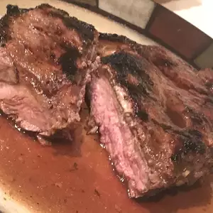

BBG NY Strip

- 1/4 cup minced garlic
- 1/2 cup extra virgin olive oil
- 1/2 Worcestershire sauce
- 1/4 cup steak seasoning
- 1 tablespoon red wine vinegar
- 1/2 teaspoon dried basil
- 1/2 teaspoon Italian seasoning
- 4 (1/2 pound) New York strip steaks
- In a bowl, mix the olive oil, Worcestershire sauce, garlic, steak seasoning, red wine vinegar, basil, and Italian seasoning. Pour into a large resealable plastic bag. Pierce steaks on all sides with a fork, and place in the bag. Gently shake to coat. Seal bag and marinate steaks a minimum of 2 hours in the refrigerator.
- Preheat grill for high heat.
- Lightly oil the grill grate. Discard marinade. Place steaks on the grill, and cook 7 minutes on each side, or to desired doneness.